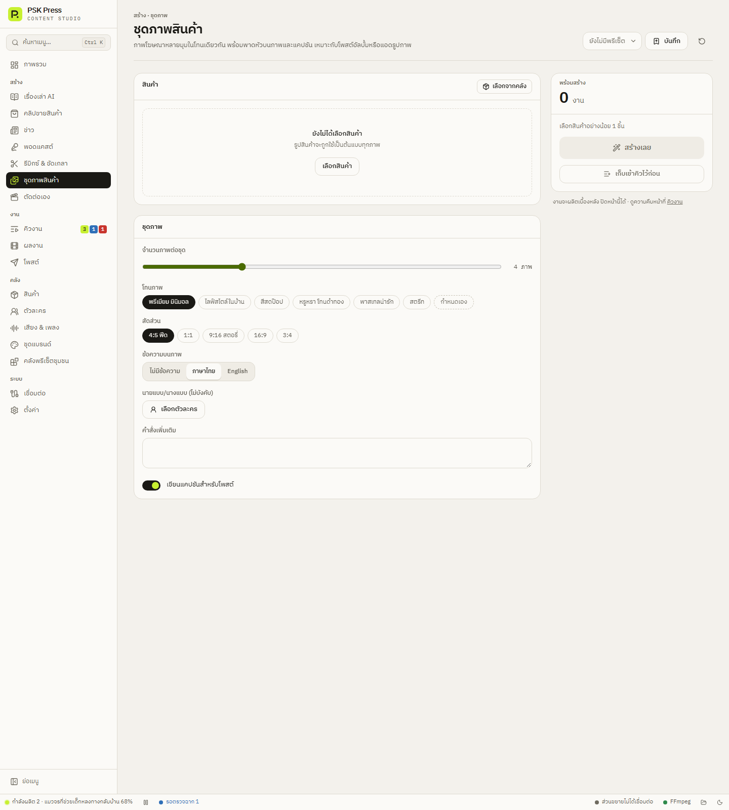

สร้างงาน
ชุดภาพสินค้า
ภาพโฆษณาหลายมุมในโทนเดียวกัน พร้อมพาดหัวบนภาพและแคปชัน เหมาะกับโพสต์อัลบั้มหรือแอดรูปภาพ


ขั้นตอน
- สินค้า → เลือกจากคลัง — รูปสินค้าจะเป็นต้นแบบของทุกภาพ
- ตั้งค่า ชุดภาพ:
- จำนวนภาพต่อชุด 1–12 (ค่าเริ่มต้น 4)
- โทนภาพ — พรีเมียม มินิมอล, ไลฟ์สไตล์ในบ้าน, สีสดป๊อป, หรูหรา โทนดำทอง, พาสเทลน่ารัก, สตรีท
- สัดส่วน — 4:5 ฟีด (ค่าเริ่มต้น), 1:1, 9:16 สตอรี่, 16:9, 3:4
- ข้อความบนภาพ — ไม่มีข้อความ / ภาษาไทย / English
- นายแบบ/นางแบบ (ไม่บังคับ) — เลือกตัวละคร
- คำสั่งเพิ่มเติม
- เขียนแคปชันสำหรับโพสต์
- กด สร้างเลย — AI วางแผนภาพแต่ละใบให้ต่างมุม ต่างฉาก แต่โทนเดียวกัน แล้ววาดทีละภาพ
ผลงานเป็นชุดภาพในหน้า ผลงาน โพสต์ได้เฉพาะ Facebook (TikTok และ YouTube รับเฉพาะวิดีโอ)
ถ้าให้ใส่ข้อความบนภาพ AI จะเขียนพาดหัวสั้น ๆ ต่อภาพ แล้วขอให้โมเดลวาดตัวหนังสือนั้นลงในภาพ ตรวจตัวสะกดภาษาไทยในภาพก่อนโพสต์ทุกครั้ง